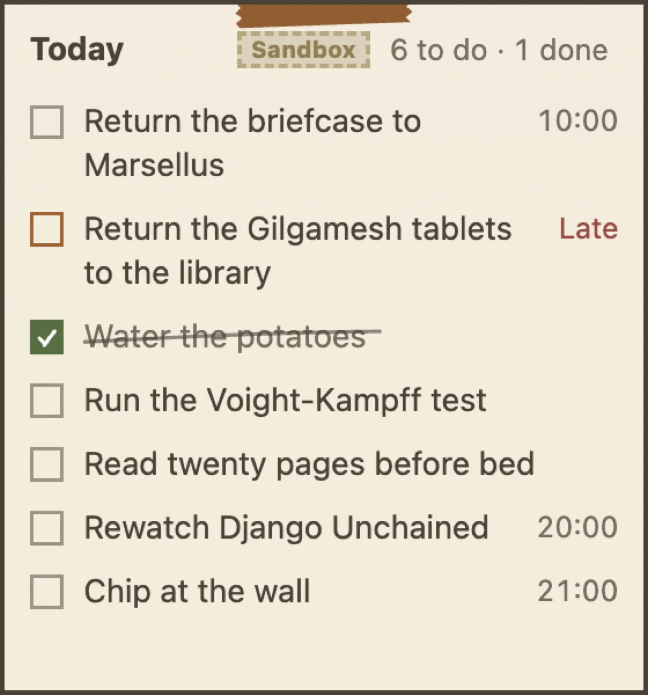

A note on your desktop, like paper.
Put a note, or today's tasks, on your desktop over everything else. It stays there while you work, and one key hides them all.

How it works
- Today, always in sight. Tick today's tasks off on the sticky itself, where you can see them.
- Any note can stick. A recipe, a plan, a list of names for a meeting.
- ⌃ ⌥ ⌘ N hides or shows them all. And Bring sticky notes here gathers them onto the screen you are on.